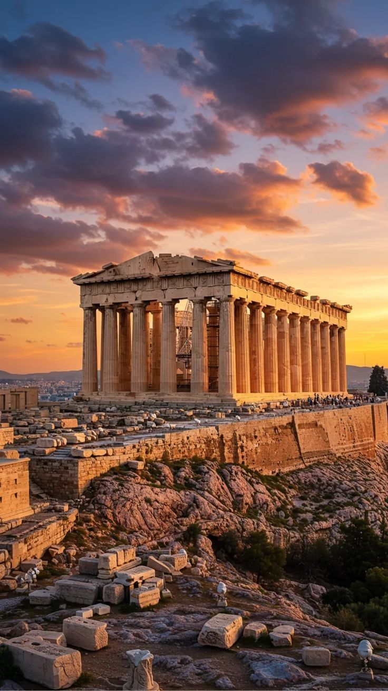
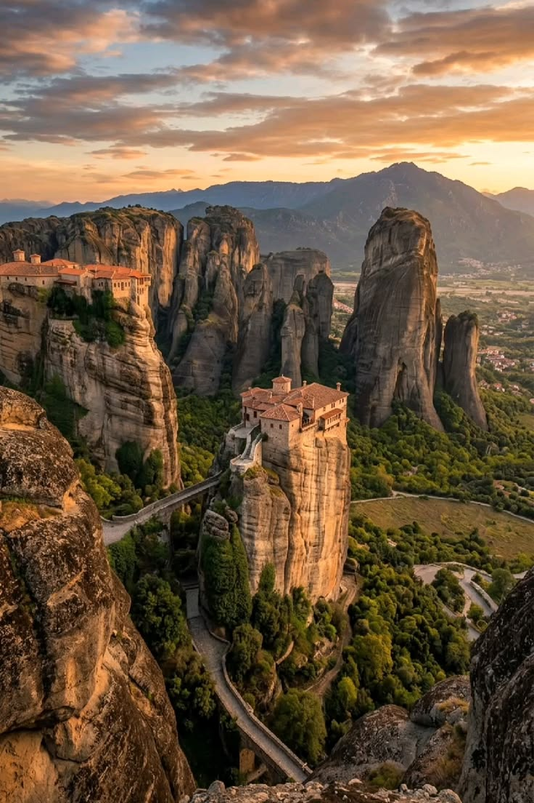
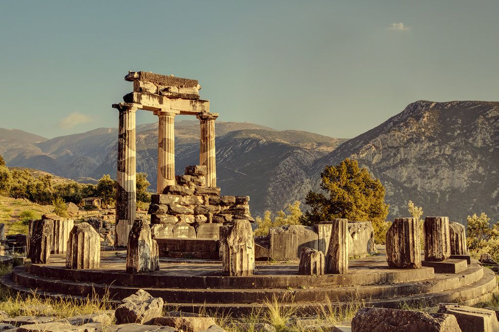

საბერძნეთი
ქვეყანა, სადაც დასავლური ცივილიზაციის საწყისები, ოლიმპიური ღმერთების ლეგენდები და ეგეოსის ზღვისა თუ კიკლადების კუნძულების თეთრ-ლურჯი სილამაზე ერთმანეთს სრულყოფილად ერწყმის. საბერძნეთი მოგზაურებს სთავაზობს ნამდვილ კონტრასტებს — ათენის ანტიკური, მარმარილოს ტაძრებიდან, სანტორინისა და მიკონოსის კოსმოპოლიტურ და მზიან სანაპიროებამდე. ეს არის ადგილი, სადაც ისტორია ყოველ ნაბიჯზე ცოცხლობს, ხოლო ცხოვრების თავისუფალი, ხმელთაშუაზღვისპირული რიტმი პირველივე წუთებიდანვე გადაგედება.
ჩვენი საბერძნეთის ტურის ფარგლებში შემდეგ გამორჩეულ ადგილებს მოვინახულებთ:

ათენის აკროპოლისი და პართენონი (The Acropolis & Parthenon): კლდოვან ბორცვზე წამომართული ანტიკური სამყაროს უდიდესი არქიტექტურული ძეგლი, რომელიც ქალღმერთ ათენას პატივსაცემად აიგო და საუკუნეებია ქალაქს ამაყად გადაჰყურებს.
მეტეორას სამონასტრო კომპლექსი (Meteora): ცასა და დედამიწას შორის გამოკიდებული, გიგანტურ ბუნებრივ კლდეებზე აშენებული შუასაუკუნეების მონასტრები, რომლებიც ნამდვილ საინჟინრო და სულიერ საოცრებას წარმოადგენს.


დელფოს არქეოლოგიური ზონა (Delphi): ძველი ბერძნების მიერ „დედამიწის ცენტრად“ მიჩნეული მისტიკური ადგილი აპოლონის ტაძრითა და თეატრით, სადაც ლეგენდარული დელფოს ორაკული წინასწარმეტყველებდა.
სანტორინის კუნძული და ოია (Santorini & Oia): ვულკანურ კლდეებზე შეფენილი თეთრი სახლები და ლურჯგუმბათოვანი ეკლესიები, საიდანაც იშლება მსოფლიოში ყველაზე ცნობილი და ფერადი მზის ჩასვლის ხედები.

ღირებულებაში შედის:
- ავიაბილეთები ორივე გზა
- 8 კილო ხელბარგი
- სასტუმრო 5 დღე 4 ღამე